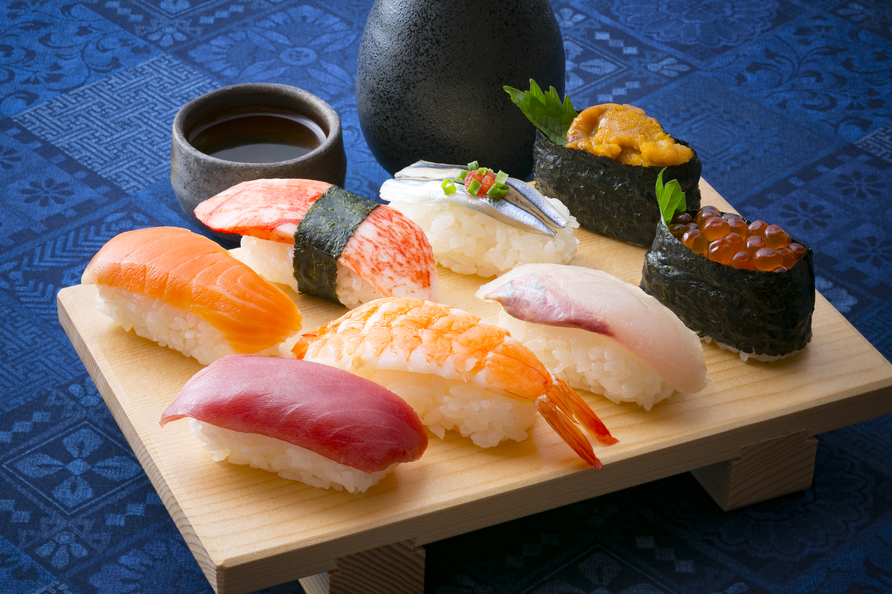

Sushi

Description
Sushi is a popular Japanese dish that typically consists of seasoned sushi rice and a variety of fillings such as raw fish, vegetables, or cooked seafood. The rice is usually wrapped in a sheet of dried seaweed called nori and then cut into bite-sized pieces. Sushi can be served with wasabi, soy sauce, and pickled ginger for added flavor. Sushi is known for its fresh and delicate flavors, and it has become a popular dish around the world.
Ingredients
- Sushi rice
- Rice vinegar
- Sugar
- Salt
- Nori (dried seaweed)
- Sashimi-grade raw fish or cooked seafood
- Vegetables (e.g. cucumber, avocado, carrot)
- Wasabi (optional)
- Soy sauce (optional)
- Pickled ginger (optional)
Steps
- Rinse 2 cups of sushi rice in cold water until the water runs clear.
- Add the rice to a pot with 2 cups of water and bring to a boil. Cover and reduce the heat to low, then simmer for 18-20 minutes.
- In a small saucepan, mix 1/4 cup of rice vinegar, 2 tablespoons of sugar, and 1 teaspoon of salt over low heat until the sugar dissolves. Set aside to cool.
- Transfer the cooked rice to a large bowl and mix in the vinegar mixture until the rice is evenly coated. Allow the rice to cool to room temperature.
- Cut your desired fillings (e.g. raw fish, vegetables) into small strips or pieces.
- Place a sheet of nori shiny-side down on a sushi mat or piece of plastic wrap. Spread a thin layer of rice over the nori, leaving a 1-inch border at the top edge.
- Add your desired fillings in a row across the center of the rice.
- Roll up the sushi tightly using the mat or plastic wrap to help shape it. Use the border of rice at the top to seal the roll.
- Repeat the process with the remaining nori sheets and fillings.
- Cut each roll into slices with a sharp knife and serve with wasabi, soy sauce, and pickled ginger.